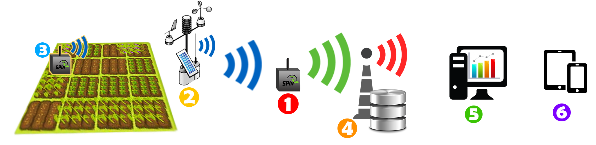

Monitore sua plantação de qualquer lugar 24 horas por dia com melhor sistema de monitoramento agrícola.
Com sistema é possível planejar a duração do ciclo, prever doenças nas plantações, aumentando sua produtividade.
O SPIn oferece automatização de seu sistema de irrigação, economizando até 44,5% de agua e 57% de energia.
Integre o SPIn à sistemas de proteção e irrigação, reduzindo custos e assegurando produtividade.
Conheça o MiniPin, MaxPin, ServerPin, Sistema de Monitoramento Online.
O SPIn é um produto que conta com sensores de temperatura e umidade do ar e do solo, velocidade e direção do vento, pluviômetros (sensores que medem o nível de chuva) e GPS. O sistema é composto de 3 unidades: unidade de transmissão (1), e duas unidades de coleta de dados, sendo uma delas de dados atmosféricos (2) e outra, do solo (3). Os dados coletados pelos sensores são enviados para a unidade de transmissão, que por sua vez, envia essas informações para um banco de dados (4). Outra ferramenta oferecida pelo SPIn é um alicativo web (5) que apresenta ao agricultor a leitura feita pelos sensores de forma simples, os resultados das análises climáticas e os riscos de pragas e doenças, além de um sistema de alerta via SMS (6) ao ser detectado algum risco na plantação.

O SPIn, é uma empresa que produz soluções para o agronegócio oferecendo produtos que associam alta tecnologia e excelente custo-benefício. As soluções propostas podem auxiliar aos agricultores de forma geral, oferecendo a eles os recursos necessários para a otimização da produção e consequentemente maior controle sobre os gastos e o crescimento do lucro. Além disso, possibilita a prevenção de pragas e doenças para aqueles que possuem cultivos mais sensíveis a eventos climáticos.
Com o monitoramento preciso de diversas variáveis simultaneamente, o sistema proporciona o controle e a automatização da plantação, que consequentemente proporciona um melhor aproveitamento do solo, sem que isso represente maior degradação ambiental. Além disso, o projeto auxilia o agricultor na tomada de decisões, visando maior eficiência no processo de produção e de aproveitamento da matéria-prima, mantendo o agricultor com maior competitividade econômica em relação aos grandes latifundiários.
Em caso de dúvidas entre em contato conosco segue abaixo nossas formas de contato e nosso endereço.
{kind=link}
{kind=link}
{kind=link}
{kind=link}